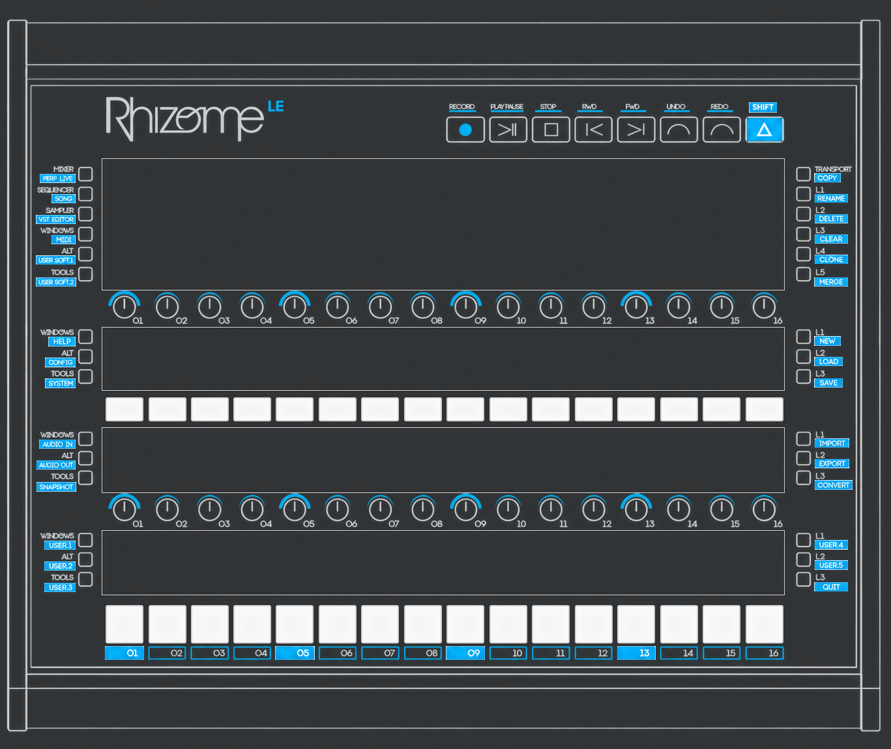

- Zynthian’s source-backed mixer and chain behaviour
- FluidSynth SF2 instruments and preset browsing
- Envelope and filter editing with graphical feedback
- Physical button and endless-encoder integration
- Simultaneous Mac and Rhizome display output
03 / WHY THIS EXISTS
Too much potential
to leave behind.
PROJECT STARTED / 02-11-2026
The first software implementation within the Rhizome community.
Rhizome Zynthian Edition grew from that experience: reclaiming the LE with a new software foundation, built around Zynthian’s existing musical architecture and native processing.
The first step was bringing the screen back. Then came the controls, the mixer and, finally, playable instruments.
Resulting in a working instrument here again, with more still to come.